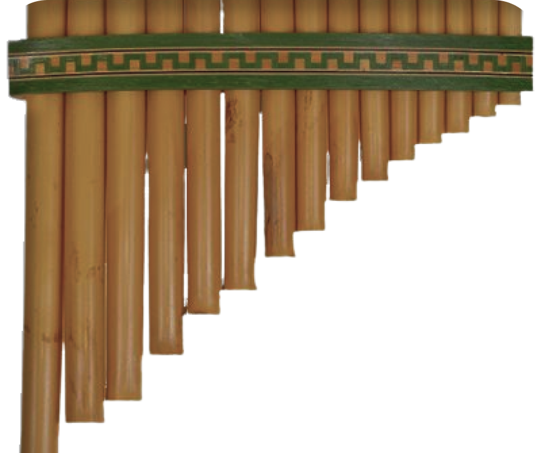

PAN-FLUTE

GUIDE TO PLAY PAN FLUTE
Use your computer keyboard or click the pan-flute to play the virtual pan-flute. You can use the
following shortcuts:
- Pipe 1 : use q
- Pipe 2 : use w
- Pipe 3 : use e
- Pipe 4 : use r
- Pipe 5 : use t
- Pipe 6 : use y
- Pipe 7 : use u
- Pipe 8 : use i
- Pipe 9 : use a
- Pipe 10 : use s
- Pipe 11 : use d
- Pipe 12 : use f
- Pipe 13 : use g
- Pipe 14 : use h
- Pipe 15 : use j
Share your experience or request to add more on our mail !